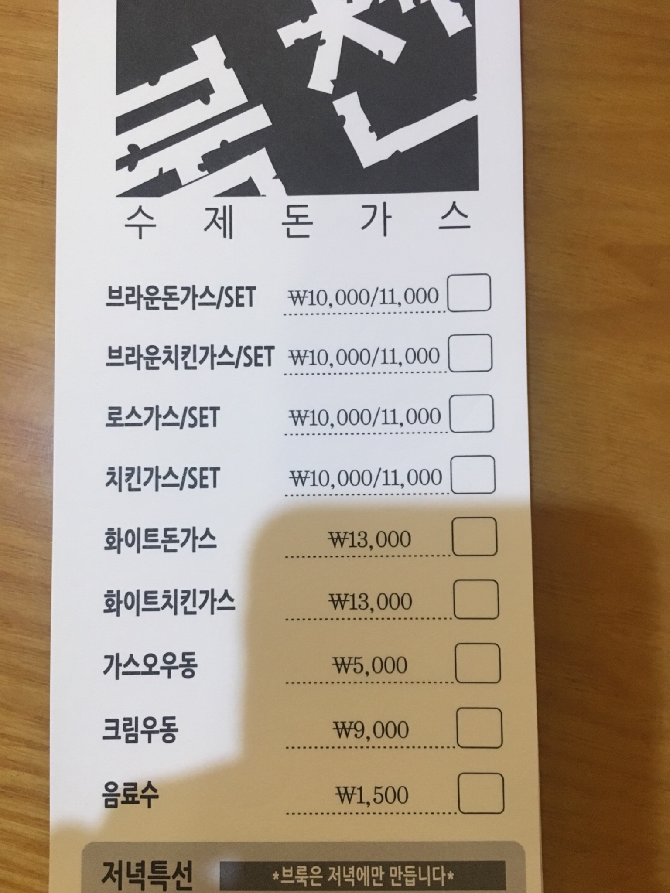

북천
4.7
View : 151,488 | Write : 115 | Pick : 4,078
| 주소 |
서울특별시 용산구 한강대로38가길 7-2 서울시 강남구 삼성동 58-6 |
| 전화번호 | 02-796-2461 |
| 음식 종류 | 까스 요리 |
| 가격대 | 만원-2만원 |
| 주차 | 주차공간없음 |
| 영업시간 | 월-금: 11:30 - 20:00 토: 11:30 - 17:00 |
| 휴일 | 일 |
| 메뉴 |
브라운돈가스
12,000원 로스가스 12,000원 화이트돈가스 15,000원 크림우동 10,000원  |
| 리뷰(115) |
전체 (115) | 맛있다 (110) | 괜찮다 (3) | 별로 (2) |
| 해띠 | 맛있다!!!!!!!!!! 브라운돈가스 약간 매콤하니 맛있다.. 경양식돈까스 중에선 끝판왕!! (화이트는 ...크림보다는 수프에 가까워서 불호) |
| 유자 | 돈까스 맛있어용ㅎㅎ |
| 맛따라길떠나 | 용산우체국 골목에 위치한 가정집느낌의 돈까스 맛집!! 2017년 알게되어 그때부터 꼭 들려요... 점심시간에는 매장이 꽉 차고 웨이팅도 무조건 있을정도 그만큼 맛있다는 반증이겠죠 |